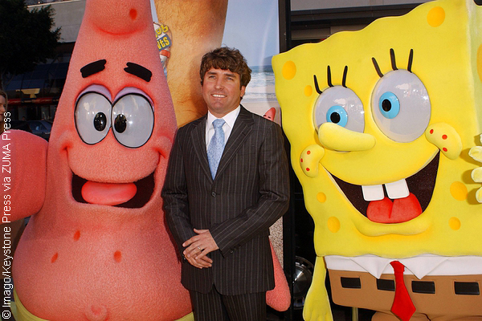
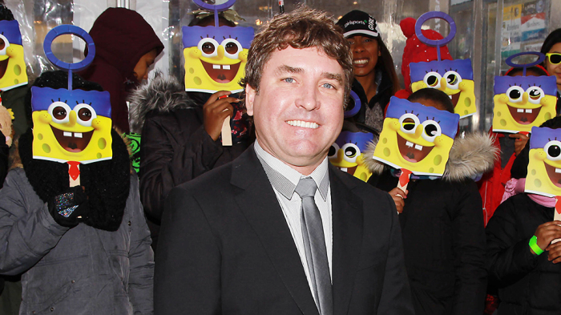
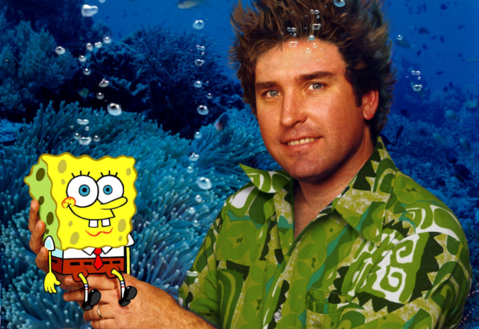

A Tribute to Stephen Hillenburg
Home
Timeline
Major Accomplishments



Welcome to Stephen Hillenburg's tribute page!
Take a moment to look around and remember his influence on television and animation.